의공산업기사 (2019-03-03 기출문제)
1과목: 기초의학 및 의공학
1. 그림과 같이 철심의 위치를 코일 간의 유도 결합을 통해 측정하는 위치 센서는?
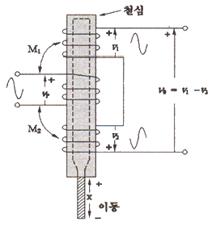
- 스트레인게이지(strain gauge)
- 용량성 변위계(capacitive transducer)
- 유도성 휘스톤브리지(inductive wheatstone bridge)
- 선형 전압 미분변압기(linear voltage differential transformer)
(정답률: 90%)

2. 의식수준 5단계 중 기면단계에 해당하는 것은?
- 정상적 의식
- 졸음이 오는 상태
- 지속적이고 강한 자극에 반응 보임
- 모든 자극에 반응 없음
(정답률: 96%)
3. 능동 수송의 중요성을 설명한 내용이 아닌 것은?
- 농도 경사 세포 내외에 있는 이온들의 농도 경사를 유지하는 데 중요하다.
- 신장, 위, 창자 등의 세포막에서 아미노산 또는 포도당의 공동 수송에 중요하다.
- 혈액으로부터 세포 내 포도당 수송에 중요하다.
- 능동 수송을 통한 Na+ 의 세포 이동은 세포 부피 조절에 중요하다.
(정답률: 80%)
4. 흉막강 내에 공기나 가스가 축적되어 호흡장애를 유발하는 질환은?
- 폐섬유증(pulmonary fibrosis)
- 크루프(croup)
- 폐렴(pneumonia)
- 기흉(pneumothorax)
(정답률: 90%)
5. 미세 전극(microelectrode)에 대한 설명으로 틀린 것은?
- 다른 전극에 비해 매우 낮은 전극 임피던스를 갖는다.
- 일반적으로 절연되지 않은 전기 전도 부분이 매우 적다.
- 세포 수준에서의 전위를 측정할 수 있다.
- 금속 마이크로 전극과 마이크로피펫 전극이 이에 해당한다.
(정답률: 76%)
6. 생체표면전극에 대한 설명으로 틀린 것은?
- 오랫동안 안정적으로 체표면과의 접촉을 유지하여야 한다.
- 피부와의 접촉 임피던스를 줄이기 위하여 페이스트(paste)를 사용한다.
- 접촉저항은 면적에 반비례하기 때문에, 실제 표면에 접촉하는 면적은 넓을수록 좋다.
- 전극의 금속에서 발생하는 분극 전압은 높아야 한다.
(정답률: 70%)
7. 세포 내 구조인 미토콘드리아(motochondria)의 역할은?
- 영양소로부터 에너지를 추출하는 역할
- 독성 물질을 해독하는 등의 세포 보호기능 역할
- 여러 세포소기관들과 상호작용을 통하여 단백질을 합성하는 역할
- 소화효소를 함유하여 노화된 세포소기과이나 부스러기 같은 물질들을 분해하는 역할
(정답률: 92%)
8. 평행판 모양의 용량성 센서에서 생체 계측을 위해 변화를 줄 수 있는 것은?
- 판의 두께
- 저항
- 판 사이의 거리
- 인덕턴스
(정답률: 85%)
9. 세포막에 대한 설명으로 옳은 것은?
- 세포막은 단백질로만 구성되어 있다.
- 세포막 외부와 내부 사이에 전위치가 존재하지 않는다.
- 세포막에 있는 특정 단백질은 물질이동의 매개체로 작용하지 않는다.
- 세포막은 반투과성 막이다.
(정답률: 88%)
10. 생체표면전극에 대한 설명으로 틀린 것은?
- 인체를 구성하는 많은 세포들은 활동하기 위하여 각각 세포 안팎으로 이온에 의한 전기의 흐름이 일어난다.
- 체표면에 전극을 부착하는데, 몸을 덮고 있는 피부는 일반적으로 전기를 잘 통과시키지 못하는 성질이 있다.
- 체표면 전극의 경우, 계측상태의 임피던스는 전극, 피부 및 내부조직의 임피던스에 의하여 형성된다.
- 피부 임피던스는 일반적으로 RC 병렬 회로로 표기되는데, 저주파 영역에서 전극접촉 임피던스는 주파수에 비례한다.
(정답률: 77%)
11. 열전쌍의 특성으로 틀린 것은?
- 열용량이 크다.
- 열기전력이 작다.
- 접점이 작다.
- 열의 빠른 변화를 쉽게 따라갈 수 있다.
(정답률: 75%)
12. 유도성을 이용한 센서 중 가장 자주 사용되며, 임상에서는 주로 압력이나 변위 또는 힘을 측정하는데 사용되는 센서는?
- 자기 유도
- 전위차계
- 상호 인덕턴스
- 선형 가변 차동변환기
(정답률: 85%)
13. Ag-AgCl 전극과 비교한 귀금속 전극에 대한 설명으로 틀린 것은?
- 용량성 전기적 특성을 보인다.
- 전극 수명이 상대적으로 길다.
- 대표적인 비분극 전극에 해당한다.
- 동잡음이 상대적으로 크다.
(정답률: 76%)
14. 우심방과 우심실 사이의 판막 명칭은?
- 삼첨판
- 승모판
- 대동맥판
- 폐동맥판
(정답률: 92%)
15. 다음은 피부 표면에 부착된 전극의 전기적 등가 회로에서 전극-페이스트 경계면의 등가회로를 나타낸 것이다. 이에 대한 설명으로 틀린 것은?
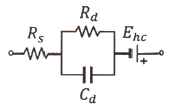
- Ehc는 전극 표면에 나타나는 반전지 전위(half-cell potential)를 의미한다.
- Rd와 Cd는 전극-전해질 경계면에서의 작용과 분극(polarization)에 의한 저항과 리액턴스 성분을 나타낸다.
- 고주파대역(1wC ＜＜ Rd)에서 전체 등가 임피던스는 Rs로 증가된다.
- 저주파대역(1/wC ＞＞ Rd)에서 전체 등가 임피던스는 거의 Rs + Rd가 된다.
(정답률: 88%)
16. 평행판 모양의 용량성 센서에서 정전 용량을 변화시킬 수 있는 방법으로 틀린 것은?
- 판의 유효 넓이
- 판 사이의 간격
- 유전체
- 전하량
(정답률: 83%)
17. 의료용 전극 중 표면에 부착하는 전극이 아닌 것은?
- 금속판 전극
- 흡착 전극
- 부유 전극
- 미세 전극
(정답률: 86%)
18. 광센서의 광원 중 작고 저렴하며 낮은 전압으로 작동되며 선택에 따라 다양한 빛을 선택할 수 있어서 휴대시 유리한 광원은?
- 레이저
- LED
- 할로겐 램프
- 적외선
(정답률: 86%)
19. 혈액형에 따른 응집원과 응집소를 나타낸 것으로 응집소가 잘못된 것은?
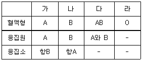
- 가
- 나
- 다
- 라
(정답률: 92%)
20. 광전식 혈량 측정 장치를 이용한 맥파측정에서 영(Young)의 탄성계수가 2배 증가하면 맥파의 전파속도는 몇 배가 되는가?
- 1
- √2
- 2
- 4
(정답률: 82%)
2과목: 의용전자공학
21. 데이터 처리 명령으로 틀린 것은?
- 산술연산
- 논리연산
- 비트처리
- 서브루틴
(정답률: 89%)
22. 생체 계측에서 발생하는 잡음(noise) 중 잡음원이 외부에 있는 잡음은?
- thermal
- contact
- shot
- radiation
(정답률: 89%)
23. 다음 논리회로 중 출력 Y = AB + BC와 같은 논리식으로 표현한 것은?
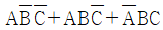
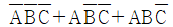
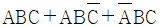
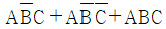
(정답률: 77%)
24. 자속밀도 0.3 Wb/m2의 자계 중에 20cm의 도체를 자계와 직각으로 50m/s의 속도로 움직일 때 유기되는 기전력(V)은?
- 0.3
- 3
- 6
- 9
(정답률: 64%)
25. 생체 신호 중 아날로그 신호의 일반적인 처리 방법으로 틀린 것은?
- 증폭
- 합성
- 변조
- 복조
(정답률: 83%)
26. 다음 회로의 출력 전압 VAB는 몇 V 인가? (단, 회로에 쓰인 다이오드의 순방향 전압강하는 0.6V이다.)
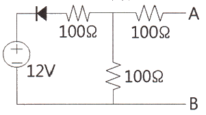
- 0
- 5.7
- 6
- 11.4
(정답률: 85%)
27. 다음 발진기 중 정궤환(Positive feed back)을 사용하는 것은?
- 진행파관
- 마그네트론
- 멀티바이브레이터
- 클라이스트론
(정답률: 80%)
28. 도체 내의 두 점 사이에 20C의 전하를 옮기는데 60J의 에너지가 필요하였다고 한다면, 두 점 사이의 전압(V)은?
- 1
- 2
- 3
- 4
(정답률: 95%)
29. 연산증폭기에 부귀환 회로를 추가하여 전압이득100배인 비반전 증폭기를 구성하였을 때 부귀환의 효과를 바르게 설명한 것으로만 나열한 것은?
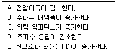
- A, B, C
- A, B, D
- A, B, E
- B, C, E
(정답률: 86%)
30. 생체 계측에 있어서 의학적 매개 변수 중 물리적 변수가 아닌 것은?
- 힘
- 압력
- 음파
- 생체 전위
(정답률: 87%)
31. LC 직렬회로의 공진 조건으로 옳은 것은?
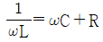
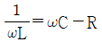
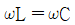
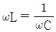
(정답률: 91%)
32. 다음 논리함수를 불대수를 이용하여 간단히 하면?
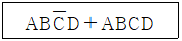
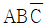
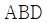
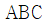
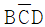
(정답률: 88%)
33. 다음 그림과 같은 회로의 기능은?
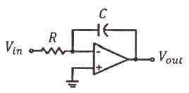
- integrator
- adder
- comparator
- differentiator
(정답률: 84%)
34. P형 반도체를 만들기 위한 재료는?
- 억셉터
- 도너
- 5가 불순물
- 비소
(정답률: 80%)
35. 심장 전위의 발생 및 전도 순서로 옳은 것은?
- 방실결절 → 동방결절 → 히스속 → 푸르킨예 섬유 → 심실근
- 동방결절 → 방실결절 → 히스속 → 푸르킨예 섬유 → 심실근
- 방실결절 → 동발결절 → 심실근 → 푸르킨예 섬유 → 히스속
- 동방결절 → 방실결절 → 심실근 → 히스속 → 푸르킨예 섬유
(정답률: 82%)
36. 두정부나 후두부에서 잘 나타나고, 시각 및 감각 자극에 의해 억제되는 EEG 파형은?
- 델타(Delta)파
- 세타(Theta)파
- 알파(Alpha)파
- 베타(Beta)파
(정답률: 81%)
37. 압력측정시스템의 변수가 응답에 미치는 영향을 고려할 때 카테터(catheter) 시스템에서 기포가 유입된 경우 고유주파수와 감쇠계수의 변화로 옳은 것은?
- 고유주파수 – 증가, 감쇠계수 - 증가
- 고유주파수 – 증가, 감쇠계수 - 감소
- 고유주파수 – 감소, 감쇠계수 - 증가
- 고유주파수 – 감소, 감쇠계수 – 감소
(정답률: 71%)
38. 자기인덕턴스 0.⑤H의 회로에 전류가 매초 530A의 비율로 증가할 때, 자기 유도기전력은?
- -26.5V
- -27.5V
- -28.5V
- -29.5V
(정답률: 59%)
39. 진공 중의 구 대전체에서 반경이 r(m)일 때 전하의 분포가 일정하다고 하면 전체 전하량이 Q(C)일 때, 구의 외부 전계(v/m)는? (단, ε0는 진공 중 유전율)
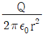
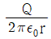
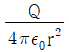
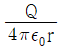
(정답률: 85%)
40. 호흡기 폐포 내 공기와 폐 모세혈관 내 혈액 간에 산소와 이산화탄소의 교환기능 평가에 사용하는 지표는?
- 환기능(ventilation)
- 확산능(diffusion)
- 분포능(distribution)
- 흡수능(absorption)
(정답률: 84%)
3과목: 의료안전ㆍ법규 및 정보
41. 의학관련 자료의 분류 방법이 아닌 것은?
- ICD
- SNOMED
- SSD
- ATC
(정답률: 91%)
42. 환자에게 열을 주는 것을 의도하지 않는 의료기기 장착부의 표면온도는 몇 ℃를 초과하여서는 안 되는가?
- 41
- 25
- 15
- 5
(정답률: 86%)
43. 의료기기 안전에 관한 사항 중 열적안정은 물체의 온도가 1시간 동안 몇 ℃ 이상 상승되지 않는 상태를 의미하는가?
- 1℃
- 2℃
- 10℃
- 20℃
(정답률: 87%)
44. 의료기기 품목 및 품목별 등급에 관한 규정 중 의료용 흡입기 분류로 틀린 것은?
- 초음파 흡입기
- 투과식 흡입기
- 진단용 흡입기
- 의료용 분무기
(정답률: 79%)
45. 각 의료기간에서 개별적으로 추진해 온 전자의무기록을 국가적으로 확장하여 개인의 평생 동안 관련된 진료와 건강관련 정보를 모두 지원하고 관리하는 시스템으로 국민건강관리 정보시스템을 무엇이라 하는가?
- AMR(Automated Medical Record)
- CMR(Computerized Medical Record)
- EMR(Electronic Medical Record)
- EHR(Electronic Health Record)
(정답률: 89%)
46. 의료기기의 등급 지정 절차가 옳은 것은?
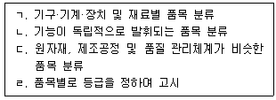
- ㄱ → ㄴ → ㄷ → ㄹ
- ㄱ → ㄷ → ㄴ → ㄹ
- ㄴ → ㄱ → ㄷ → ㄹ
- ㄴ → ㄷ → ㄱ → ㄹ
(정답률: 74%)
47. 전기쇼크에 대한 누설전류 허용값이 10μA인 경우는?
- B형 – 환자누설전류, 단일고장
- B형 – 외장누설전류, 정상상태
- CF형 – 접지누설전류, 단일고장
- CF형 – 환자누설전류, 정상상태
(정답률: 70%)
48. 병원정보시스템의 구축 목적으로 틀린 것은?
- 인력 운용의 효율성 증대
- 합리적인 운영 계획 수립
- 획기적인 환자 서비스의 개선
- 보험 업무 창구의 자동화
(정답률: 86%)
49. 일반적으로 의료기기의 용기나 외장에 기재하는 사항으로 틀린 것은?
- 제조업자 또는 수입업자의 상호와 주소
- 수입품의 경우는 제조원(제조국 및 제조사명)
- 제조번호와 제조 연월
- 사용방법 및 사용 시 주의사항
(정답률: 84%)
50. 의료기기법령상에서 규정하고 있는 의료기기 품목으로 틀린 것은?
- 질병을 진단·치료·경감·처치 또는 예방할 목적으로 사용되는 제품
- 상해(傷害) 또는 장애를 진단·치료·경감 또는 보정할 목적으로 사용되는 제품
- 장애인보조기구 중 의지(義肢)·보조기(補助器)에 해당되는 제품
- 임신을 조절할 목적으로 사용되는 제품
(정답률: 80%)
51. 정보시스템의 자료와 자원을 효율적으로 관리하기 위한 정보보안의 속성에 해당되지 않은 것은?
- 무결성
- 기밀성
- 완벽성
- 가용성
(정답률: 84%)
52. 과거 수술실에서 사용되는 자동 메스 장치의 구동원, 피부병의 냉동 수술 등에 주로 사용됐지만 최근 아기 탯줄 보관 등 냉동용으로 사용되는 의료가스는?
- 질소
- 탄산
- 헬륨
- 에틸렌옥사이드(EO)
(정답률: 82%)
53. 의료기기 판매업 신고를 하여야 하는 경우는?
- 의료기기의 제조업자나 수입업자가 그 제조하거나 수입한 의료기기를 의료기기 취급자에게 판매하거나 임대하는 경우
- 약국 개설자나 의약품 도매상이 의료기기를 판매하거나 임대하는 경우
- 의료기기의 판매를 업으로 하려는 자(이하 “판매업자”라 한다) 또는 임대를 업으로 하려는 자(이하 “임대업자”라 한다)의 경우
- 총리령으로 정하는 임신조절용 의료기기 및 의료기관 외의 장소에서 사용되는 자가진단용 의료기기를 판매하는 경우
(정답률: 80%)
54. 레이저와 조직 간에 발생하는 상호작용의 유형이 아닌 것은?
- 온열효과
- 확산
- 광분해
- 광화학효과
(정답률: 77%)
55. HIS의 가장 핵심이 되는 부분으로서 병원을 찾아오는 환자를 중심으로 일어나는 일련의 흐름을 전산화한 것은?
- LIS
- OCS
- EMR
- CDS
(정답률: 77%)
56. 심실세동 전류에 대한 설명으로 옳은 것은?
- 개인이 감지할 수 있는 최소의 전류이다.
- 사람에 따라 다르나 약 1mA 정도이다.
- 인체에 인가되는 전류가 증가되었을 때 자발적으로 손을 뗄 수 있는 상태를 유지할 수 있는 최대 전류값으로 약 10mA 이다.
- 인체통과 전류가 100mA에 달하고 경과 시간이 길어지면 심장이 경련을 일으켜 심장이 멎는 전류치를 말한다.
(정답률: 81%)
57. 의료폐기물은 며칠 이내에 폐기물을 처리하여야 하는가? (단, 격리의료폐기물의 경우로 가정한다.)
- 당일
- 2일
- 30일
- 60일
(정답률: 74%)
58. 의료기기는 의료기기위원회의 심의를 거쳐 몇 개의 등급으로 분류되는가?
- 2개
- 3개
- 4개
- 5개
(정답률: 89%)
59. 인체에 과도한 전류가 흘렀을 때 인체에서 나타나는 작용으로 틀린 것은?
- 열작용
- 자극작용
- 광학작용
- 비열작용
(정답률: 75%)
60. 누설전류의 종류에 대한 설명 중 틀린 것은?
- 접지누설전류 : 전원부에서 절연물을 통하여 내부 또는 표면을 통해 보호접지선으로 흐르는 누설전류
- 외장누설전류 : 정상적인 사용 시에 장착부 및 조작자 또는 환자가 접촉할 수 있는 외장에서 보호접지선 이외의 도전체를 통하여 대지 또는 외장으로 흐르는 누설전류
- 환자누설전류 : 장착부에서 환자를 통하여 대지에 흐르거나 외부 전원으로부터 환자와 F형 장착부를 통하여 대지로 흐르는 누설전류
- 환자측정전류 : 환자를 통해 환자접속부와 다른 모든 환자접속부 간에 흐르는 생리학적 효과를 발생시키는 것을 의도하지 않은 전류
(정답률: 63%)
4과목: 의료기기
61. 분광광도법에 의한 임상기기에 사용되는 광원(전구)으로 틀린 것은?
- 수소 가스 방전관
- 중수소 가스 방전관
- 아크 방전등
- 할로겐전구
(정답률: 84%)
62. 유발 근전도의 분류에 대한 설명으로 틀린 것은?
- M파 : 자극 후 수 msec의 잠복 기간 후 나타나는 전위이다.
- F파 : 근육부위에 운동신경 전도속도를 측정하는 데 유효하다.
- H파 : 척수반사 회로를 통하여 자극을 전달한다.
- T파 : 원심성 운동신경 섬유를 역행하는 자극에 의한 것이다.
(정답률: 58%)
63. 초음파기기의 방식과 진단대상과의 연결이 틀린 것은?
- A모드 - 뇌
- 도플러 모드 – 태아의 동태
- M 모드 - 위장
- B 모드 – 간
(정답률: 72%)
64. 임시형 페이스메이커의 응급처리로 틀린 것은?
- 경두개 심박조율
- 경정맥 심박조율
- 경흉부 심박조율
- 경식도 심박조율
(정답률: 80%)
65. 인체 내에 고에너지를 갖는 충격파를 집중적으로 가해 체내 결석 등을 수술 없이 치료할 수 있는 장비는?
- Ultrasound Scanner
- ESWL
- PDT
- MRI
(정답률: 80%)
66. 저주파치료기에 대한 설명으로 틀린 것은?
- 고주파의 반대 개념인 저주파는 보통 10kHz 이하의 주파수를 가진다.
- 저주파는 전기자극을 줄 때 수축성 구조의 치료에 주안점을 두어야 한다.
- 지방이나 근육에 자극을 줌으로써 조직액을 증가시켜 지방을 배출하므로 지방제거에도 효과를 나타낸다.
- 신진대사를 원활히 해주며 피부 재생효과도 있다.
(정답률: 78%)
67. 인큐베이터의 기본 기능이 아닌 것은?
- 온도조절
- 습도조절
- 환기조절
- 냉동조절
(정답률: 86%)
68. PET에서 사용되는 감마선의 에너지는?
- 611keV
- 511keV
- 411keV
- 311keV
(정답률: 88%)
69. 양전자를 방출하는 방사선 동위원소를 인체에 주입하고, 그 동위원소의 인체 내 분포를 단면 영상으로 촬영하는 장치는?
- X-선 장치
- PET
- CT
- MRI
(정답률: 84%)
70. 광도계의 기본구조와 그 설명으로 틀린 것은?
- 전원장치 : 텅스텐 필라멘트 전구와 백색광 LED를 사용한다.
- 파장선택기 : 프리즘을 활용한 단색광기와 필터(유리필터, 간섭필터)가 있다.
- 프리즘 : 220~950nm 영역에서 사용되고 유리나 수정을 이용한다.
- 회절격자 : 200~800nm 영역에서 사용되며, 복제가 어렵기 때문에 주로 프리즘을 이용한다.
(정답률: 69%)
71. 전기수술기를 이용하여 고유저항이 2×103Ω-m, 체적이 0.5m3인 조직에 전류밀도 0.4A/m2로 전기소작을 할 경우 소모되는 전력(W)은?
- 1600
- 1250
- 200
- 160
(정답률: 48%)
72. 201개의 60Co 밀봉선원으로부터 발생되는 높은 에너지의 감마선을 이용하여 뇌의 병변을 제거하는 방사선 치료 장치는?
- PET
- MRI
- LINAC
- Camma Knife
(정답률: 86%)
73. CT 영상의 특성 중 얼마나 작은 부위를 영상으로 감지할 수 있는가를 나타내는 척도는?
- 선형성
- 대조해상도
- 공간해상도
- 영상의 크기
(정답률: 86%)
74. ECG 표준 유도법(전극법)으로 옳은 것은?
- Ⅰ : 오른쪽 팔(-)과 왼쪽 팔(+),
Ⅱ : 오른쪽 팔(-)과 오른쪽 다리(+),
Ⅲ : 왼쪽 팔(-)과 오른쪽 다리(+) - Ⅰ : 오른쪽 팔(-)과 왼쪽 팔(+),
Ⅱ : 오른쪽 팔(-)과 왼쪽 다리(+),
Ⅲ : 왼쪽 팔(-)과 오른쪽 다리(+) - Ⅰ : 오른쪽 팔(-)과 왼쪽 팔(+),
Ⅱ : 오른쪽 팔(-)과 왼쪽 다리(+),
Ⅲ : 왼쪽 팔(-)과 왼쪽 다리(+) - Ⅰ : 오른쪽 팔(-)과 왼쪽 팔(+),
Ⅱ : 오른쪽 팔(-)과 오른쪽 다리(+),
Ⅲ : 왼쪽 팔(-)과 왼쪽 다리(+)
(정답률: 89%)
75. 단극 방식 전기 수술기와 양극 방식 전기 수술기의 차이점 설명으로 틀린 것은?
- 단극 방식 전기 수술기는 본체, 전극, 대극판으로 이루어지고 양극 방식 전기 수술기는 대극판과 전극 대신 핀셋 모양의 전극을 사용한다.
- 단극 방식은 대극판을 통해 전류가 돌아가지만 양극 방식에서는 전극을 통해 전류가 되돌아간다.
- 단극 방식이 양극 방식에 비해 출력이 작다.
- 양극 방식이 작은 조직을 시술할 때 단극 방식에 비해 수술의 정확도가 높다.
(정답률: 77%)
76. 동맥혈관에 혈액의 흐름이 멈출 때까지 압박대에 공기 압력을 가한 후 압박대의 압력을 서서히 줄이면서 압박대(Cuff) 내 압력의 진동을 측정하여 혈압을 측정하는 방법은?
- 초음파 감지법(Doppler 법)
- 촉지법
- 카테터 측정법
- 오실로메트릭법
(정답률: 80%)
77. 엑스선 촬영에 사용되는 엑스선 발생장치와 관계가 없는 것은?
- 고주파코일
- 관전압
- 관전류
- 초점크기
(정답률: 69%)
78. 심전도 신호에서 심실 수축 시 발생되는 파는?
- QRS파
- P파
- T파
- U파
(정답률: 82%)
79. 인공호흡기에 대한 설명 중 옳은 것은?
- 장기간 기관 내 인공호흡 튜브를 삽입 시 후두 손상이나 심각한 위장관 팽만이 올 수 있다.
- 1분당 전달되는 인공호흡기의 평균 호흡수가 40~50회/min이다.
- 간헐적 강제환기 방식(IMV)은 대상자의 자발적인 호흡능력이 없을 때 사용한다.
- 인공호흡기는 환기를 제공함으로써 손상된 폐를 치료한다.
(정답률: 75%)
80. 체열진단실의 환경으로 틀린 것은?
- 태양광선을 차단하는 적절한 커튼이 있어야 한다.
- 전자파를 발생하는 제품이 장비 주변에 있어서는 안 된다.
- 파장이 긴 조명기구가 설치되어 있어야 한다.
- 체열진단기는 공기의 흐름이 적은 곳에 설치되어야 한다.
(정답률: 78%)
5과목: 의용기계공학
81. 일반적인 체결, 결합용 나사로 옳은 것은?
- 삼각나사
- 사각나사
- 볼나사
- 사다리꼴나사
(정답률: 70%)
82. 비중이 7.87g/cm3인 철(Fe)이 산회되어 비중이 5.95g/cm3인 일산화철(FeO)이 되었을 때, 체적변화율은 약 몇 % 인가? (단, 철의 원자량은 55.85g/mol 이고 산소의 원자량은 16g/mol이다.)
- 24
- 28
- 41
- 70
(정답률: 68%)
83. 다음 3종류의 소재 중 전단응력이 큰 순으로 나열 시 옳은 것은?
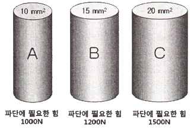
- A ＞ B ＞ C
- B ＞ A ＞ C
- C ＞ B ＞ A
- B ＞ C ＞ A
(정답률: 77%)
84. 보행과 주행의 차이점으로 옳은 것은?
- 발가락과 발뒤축의 접지
- 분속수의 차이
- 속도의 차이
- 양하지 지지기의 유무
(정답률: 71%)
85. 정형외과용 인공고관절을 사람에게 시술하려할 때, 인체 내에서 거부 반응을 나타내지 않기 위해서 필요한 특성은?
- 원상 회복력
- 생체 적합성
- 광학적 심미성
- 기계적 안정성
(정답률: 83%)
86. 의용세라믹 재료가 갖는 일반적인 특성 중 틀린 것은?
- 불활성이다.
- 압축 강도가 약하다.
- 성형 및 가공이 매우 어렵다.
- 생체적합성이 우수하다.
(정답률: 76%)
87. 빛의 에너지는 진동수에 비례한다. 다음 중 광양자 에너지가 가장 클 것으로 예상되는 빛은?
- 파장 220nm의 자외선
- 파장 300nm의 자외선
- 파장 500nm의 가시광선
- 파장 800nm의 적외선
(정답률: 73%)
88. 다음 중 탄성계수가 가장 작은 생체재료는?
- 스테인리스 스틸(Stainless steel)
- 알루미늄(Aluminium)
- 활액(Synovial fluid)
- 지르코늄(Zirconium)
(정답률: 82%)
89. 생체불활성 세라믹스가 사용되는 용도는?
- 인공 귀
- 인공 혈관
- 인공 관절
- 인공 심장
(정답률: 76%)
90. 리드가 10mm 2줄 나사가 90도 회전할 때, 나사가 움직인 거리는?
- 1mm
- 2.5mm
- 5mm
- 10mm
(정답률: 78%)
91. 음파의 의료이용에 대한 내용으로 틀린 것은?
- 피부조직(생체연조직)에서의 평균 음속은 약 1500m/s 이다.
- 공기와 피부조직의 경계면에서의 입사에너지의 대부분이 피부에 흡수된다.
- 생체계측의 경우 1~15MHz의 초음파를 사용한다.
- 체내조직의 형상에 대한 비침습적 계측이 가능하다.
(정답률: 68%)
92. 광학적 특성을 이용한 의료방법으로 틀린 것은?
- 자외선을 이용한 살균
- 신생아 고빌리루빈혈증(hyperbilirubinemia)의 광선치료
- 적외선을 이용한 통증 감소
- 자외선을 이용한 체열 측정
(정답률: 76%)
93. 임플란트로 사용되는 생체재료 중 생체에 이식한 후 오랜 시간이 지나면 모두 소멸되는 것은?
- 생체 활성 재료
- 생체 불활성 재료
- 생체 재흡수 재료
- 생체 복합 재료
(정답률: 86%)
94. 활보장이 80cm이고 분속수가 60회라면 보행 속도는?
- 0.4 m/s
- 0.6 m/s
- 0.8 m/s
- 1 m/s
(정답률: 69%)
95. 순환기에 사용되는 생체 재료의 혈액 적합성 개선을 위한 비응혈성(Nonthrombogenic) 처리방법으로 틀린 것은?
- 음이온이 대전된 표면(negative charged surface)
- 불활성 표면(inert surface)
- 거친 표면(rough surface)
- 헤파린이 처리된 표면(heparinized surface)
(정답률: 76%)
96. 다음 중 초음속이 가장 빠른 매질은?
- 골피질
- 지방
- 근
- 혈액
(정답률: 75%)
97. 생체 조직의 일반적인 물리적 특성이 아닌 것으로만 나열된 것은?
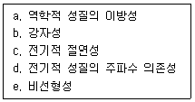
- a, b
- a, e
- b, c
- d, e
(정답률: 85%)
98. 구름 베어링의 장점으로 옳지 않은 것은?
- 바깥지름이 크다.
- 기동저항이 작다.
- 고속회전이 가능하다.
- 유지비가 적게 든다.
(정답률: 41%)
99. 가시광선보다 파장이 길어서 눈에 보이지 않고 열작용이 크고 침투력이 강하며, 유기화합물 분자에 대한 공진 및 공명 작용이 강한 것은?
- 자기력선
- 자외선
- 원적외선
- 방사선
(정답률: 78%)
100. 스테인리스강(stainless steel)의 주성분이 아닌 것은?
- Fe(철)
- Cu(구리)
- Ni(니켈)
- Mo(몰리브덴)
(정답률: 58%)